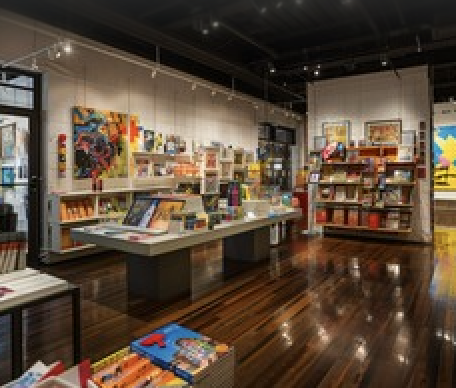

Mission Statement
Monomuse is dedicated to exploring the evolving relationship between art, technology, and society. Our mission is to inspire curiosity and creativity by showcasing innovative exhibitions that highlight how digital tools, emerging technologies, and human imagination shape the future of artistic expression.
Milestones
- 2023: Expansion of the museum space and launch of international artist collaborations.
- 2018: Launch of the Interactive Media Lab, allowing visitors to experiment with creative coding.
- 2016: MonoMuse opens its doors with its first exhibition on digital storytelling.
Gift Shop: Bring A Piece of MonoMuse Home
Take the inspiration of Monomuse with you through our thoughtfully curated gift shop. From art-inspired prints and unique souvenirs to handcrafted items and exclusive merchandise, each piece reflects the creativity and spirit of the museum.

Parking
Convenient parking is available for all Monomuse visitors. Guests can access our on-site parking garage, as well as nearby public lots and street parking within walking distance. Accessible parking spaces are available, and signage throughout the area makes it easy to find your way to the museum entrance.
Monomuse Main Garage
Located directly beneath the museum for easy access.
- $5 (first hour)
- $3 each additional hour
- $18 daily maximum
Riverfront Parking Deck
A short 3-minute walk with scenic views.
- $4 (first hour)
- $2 each additional hour
- $15 daily maximum